Building the Digital Marketing Engine for Brazil's Largest University Network
A national maturity scorecard across 10 universities, real SEM and funnel economics, and a TV+print+YouTube campaign that got pulled back mid-flight when audience testing said the creative wasn't landing.
Context
Laureate ran ten higher-education institutions across Brazil — Universidade Anhembi Morumbi (UAM), FMU, UNINORTE, UnP, UniRitter, FADERGS, FG, FPB, UNIFACS, and IBMR — each with its own regional identity, leadership, and digital maturity. Several were dealing with marketing leadership turnover and thin digital staffing. None had a shared way to measure whether digital was working. I was hired to fix that: build a national digital marketing function that could raise every institution's performance without flattening what made each one distinct.
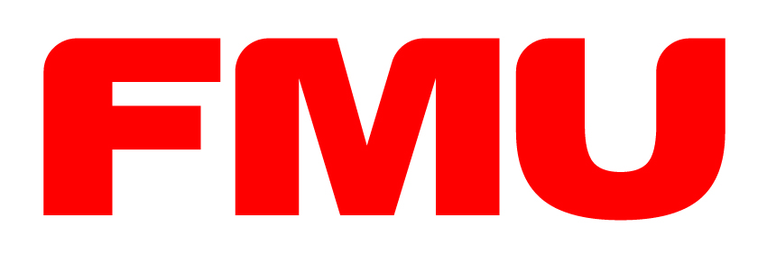
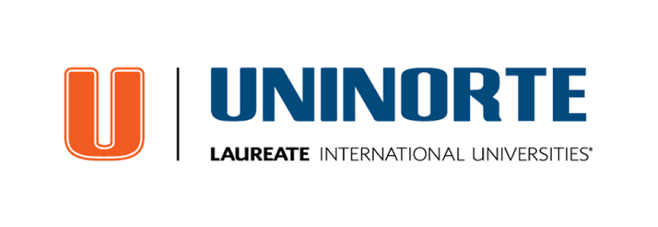
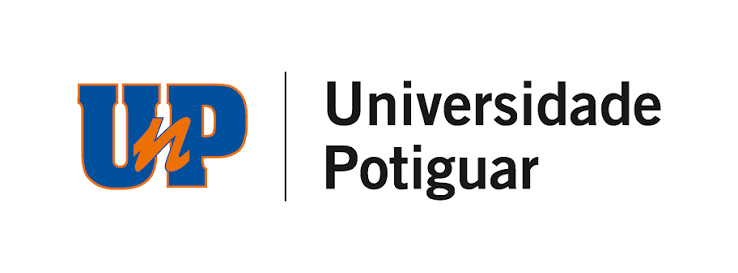
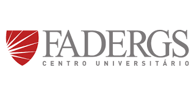
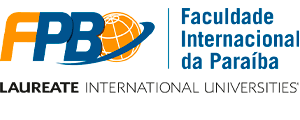
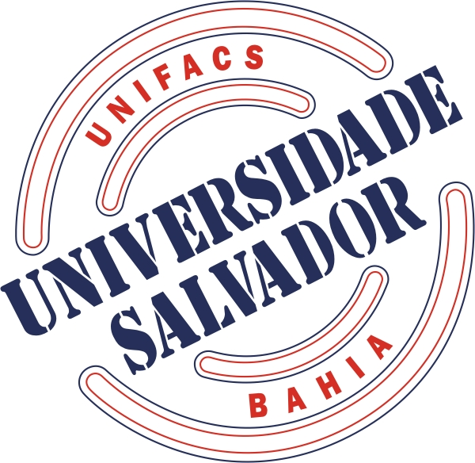
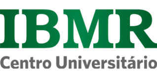
The challenge
At the network's stronger schools, digital already touched more than half of new enrollments — 64% at UAM, 74% at UNINORTE — while the marketing budget still followed an offline logic. Google's own research showed prospects were spending 70% of their research time online, against less than 10% of the budget. The gap wasn't awareness, it was structure: ten institutions making digital decisions independently, with no common metric, no shared tooling, and no way to tell a struggling school from a well-run one.
What I built
A center of excellence, not a mandate
A national digital marketing structure that defined strategy and shared best practices while leaving execution local — preserving each HEI's regional identity instead of forcing one template on ten different markets.
A maturity scorecard across all ten schools
A 6-dimension scorecard — Web Presence, Inbound Marketing, Social Media, Paid Media, KPI Control, Management — scored 0–5 and tracked three times a year. It turned "digital is working somewhere" into a number I could show leadership for every single school. This is the artifact I'm proudest of from this period: the management system behind the campaigns, not another campaign.
Search economics, fixed at the source
At UAM, bringing SEM in-house (Nov 2013) cut cost-per-acquisition from R$124.80 to R$77.17 — a 38% drop — while conversion rate nearly doubled, from 0.64% to 1.20%. Run alongside it: a separate move to an SEO-friendlier, open-code CMS to improve organic search performance.
Mobile-first, rolled out network-wide
Seven of the ten HEIs — plus the national EAD Laureate platform — shipped mobile-responsive sites in a single cycle. At UAM, publishing the mobile site brought it to 27% of visits with mobile conversions up 100% (4,900 leads). At UnP, mobile's share of conversions jumped from 13% to 46%.
Inbound and content as a lead-generation channel
The Papo Universitário blog — built by UAM's own team — drew roughly 30,000 visits a month and generated 6,000+ leads across 2015, with zero paid media behind it. Network-wide, 2015's inbound and content push added 138,000 new marketing-qualified leads — double the average volume the school-relationship (Feeder) channel produced on its own.
Purpose-built lead tools
UnP's "Detector de Carreiras" career-orientation quiz generated 13,000+ leads on its own in Rio Grande do Norte, one of the network's smallest states. A scholarship calculator tied to Brazil's national exam (ENEM) generated over 2,000 qualified leads and 600+ instant applications within days of its January 2016 launch, applications landing at UAM, UnP, and UNIFACS.
"Você Sabia": an integrated campaign, tested and corrected
This campaign ran across TV, print, a dedicated hotsite, and YouTube, built around a "surprising fact" format. Audience testing showed the format worked — credible, differentiated, no noise — but also surfaced a problem: the campaign directly named competing engineering schools in comparisons where UAM came out ahead, and the audience read that as tacky, regardless of the facts being favorable. That finding drove a deliberate pull-back for the next flight toward softer, institutional language. On the YouTube leg specifically, I used TrueView's free-then-pay structure deliberately — 15-second spots built to land the full message in the free first 5 seconds — for 1.05 million impressions and a R$0.07 cost-per-view against R$0.95–1.20 for display and search.
Real-time visibility, not month-end reporting
A national dashboard (refreshed every 5 minutes, pulling from Google Analytics, AdWords, Google Trends, and Facebook) so every HEI's traffic, funnel, and media ROI lived on one screen instead of ten separate spreadsheets — audited externally to keep the data honest.
Results
Metric
Result
UAM 2013 applications vs. goal
85,319 vs. 50,601 target (169%)
UAM 2013 digital channel share vs. goal
58% vs. 40% target (146%)
UAM SEM cost-per-acquisition
–38% (R$124.80 → R$77.17)
UAM SEM conversion rate
+87.5% (0.64% → 1.20%)
UAM 2014 digital funnel
6.05M visitors → 843K applications started → 107.6K completed
The audience testing found that naming specific competitors — even when the facts favored us — read as tacky. That's a real strategic pull-back signal, not a vanity metric, and it's why the next flight of "Você Sabia" went institutional instead of comparative.
Screenshots & dashboards
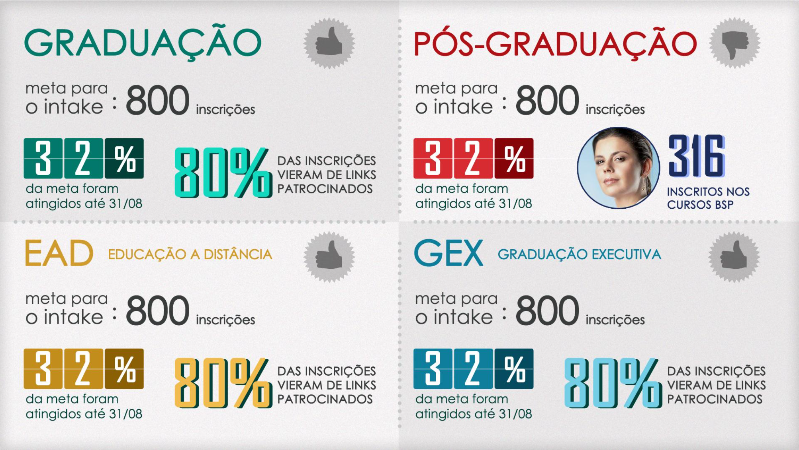
The national dashboard: intake goals and conversion sources tracked across every product line, refreshed continuously.
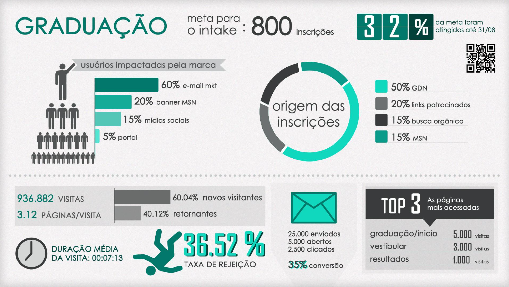
Traffic and funnel detail: 936K+ visits, bounce rate, email performance, and top-converting pages in one view.
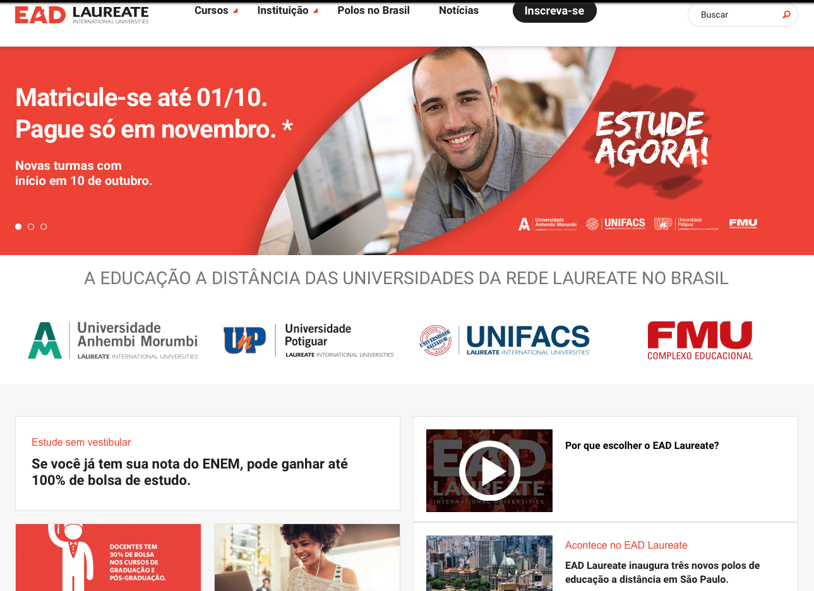
EAD Laureate: the consolidated distance-learning platform launch, uniting UAM, UnP, UNIFACS, and FMU under one national brand.
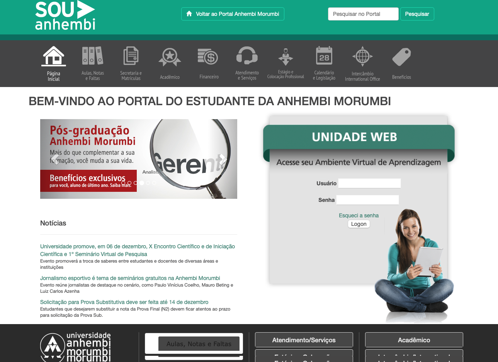
"Sou Anhembi" — the student self-service portal, a concept and brand still in use today.
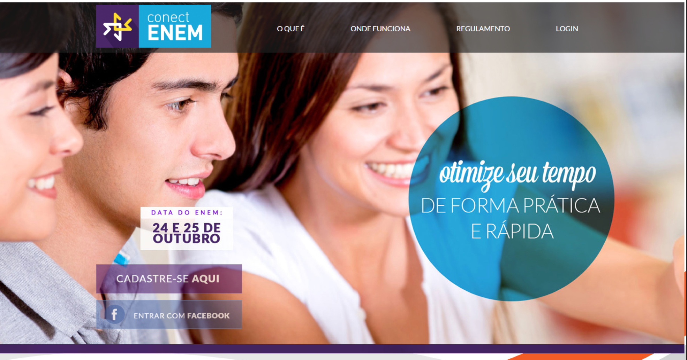
ConectEnem: an ENEM study-prep tool built as a national lead-generation channel.
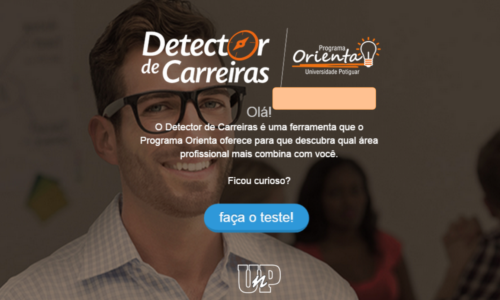
Detector de Carreiras: UnP's career-orientation quiz that generated 13,000+ leads on its own.
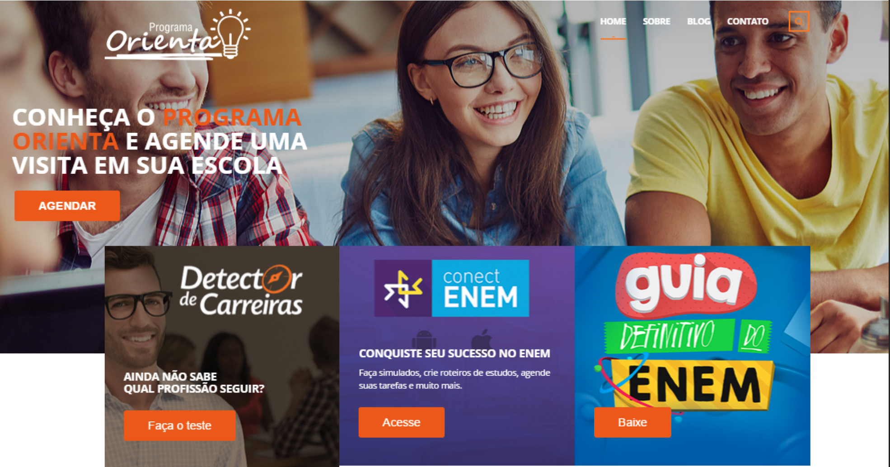
Programa Orienta: the national hub consolidating Feeder School digital services under one roof.
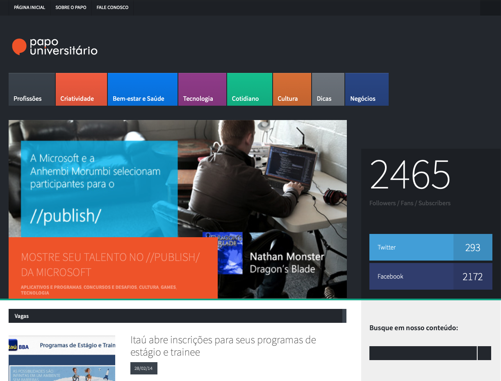
Papo Universitário: UAM's own blog, ~30,000 visits/month and 6,000+ leads in 2015 with zero paid media.
Press & media coverage
EAD Laureate platform launch
National distance-learning platform launch — Thiago led the full digital launch plan and branding consultation
Anhembi Carreiras portal launch
Career-counseling portal built for prospective students
 Head of Digital Marketing · Jul 2012 – Jun 2016
Head of Digital Marketing · Jul 2012 – Jun 2016